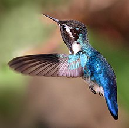
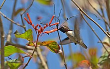

The bee hummingbird, zunzuncito or Helena hummingbird (Mellisuga helenae) is a species of hummingbird, native to the island of Cuba in the Caribbean. It is the world's smallest bird.
The bee hummingbird is the smallest living bird.[3] Females weigh 2.6 g (0.092 oz) and are 6.1 cm (2+3⁄8 in) long, and are slightly larger than males, which have an average weight of 1.95 g (0.069 oz) and length of 5.5 cm (2+1⁄8 in).[5] Like all hummingbirds, it is a swift, strong flier.
The male has a green pileum and bright red throat, iridescent gorget with elongated lateral plumes, bluish upper parts, and the rest of the underparts mostly greyish white.[3][6] Compared to other small hummingbirds, which often have a slender appearance, the bee hummingbird looks rounded and plump.
Female bee hummingbirds are bluish green with a pale gray underside. The tips of their tail feathers have white spots. During the mating season, males have a reddish to pink head, chin, and throat. The female lays only two eggs at a time, each about the size of a coffee bean.
The bee hummingbird's feathers have iridescent colors, which is not always noticeable, but depends on the viewing angle. The bird's slender, pointed bill is adapted for probing deep into flowers. The bee hummingbird feeds mainly on nectar, by moving its tongue rapidly in and out of its mouth. In the process of feeding, the bird picks up pollen on its bill and head. When it flies from flower to flower, it transfers the pollen. In this way, it plays an important role in plant reproduction. In one day, the bee hummingbird may visit 1,500 flowers.[7] It is a diurnal bird that can fly at 40–48 km/h (22–26 kn; 11–13 m/s), and it beats its wings 80–200 times per second, which allows it to remain stationary in the air to feed on flowers. The bee hummingbird lives up to seven years in the wild, and 10 years in captivity.
The bee hummingbird has been reported to visit ten plant species, nine of them native to Cuba. These flowers include Hamelia patens (Rubiaceae), Chrysobalanus icaco (Chrysobalanaceae), Pavonia paludicola (Malvaceae), Forsteronia corymbosa (Apocynaceae), Lysiloma latisiliquum (Mimosaceae), Turnera ulmifolia (Passifloraceae), Antigonon leptopus (Polygonaceae), Clerodendrum aculeatum (Verbenaceae), Tournefortia hirsutissima (Boraginaceae), and Cissus obovata (Vitaceae).[9] They occasionally eat insects and spiders. In a typical day, bee hummingbirds will consume up to half their body weight in food.
The bee hummingbird is endemic to the entire Cuban archipelago, including the main island of Cuba and the Isla de la Juventud in the West Indies.[5] Its population is fragmented, found in Cuba's mogote areas in Pinar del Rio province[10] and more commonly in Zapata Swamp (Matanzas province) and in eastern Cuba, with reference localities in Alexander Humboldt National Park and Baitiquirí Ecological Reserve (Guantanamo province) and Gibara and Sierra Cristal (Holguin province).
Male bee hummingbirds court females with sound from tail‐feathers, which flutter during display dives.[12] The bee hummingbird's breeding season is March–June, with the female laying one or two eggs.
Using strands of cobwebs, bark, and lichen, female bee hummingbirds build a cup-shaped nest about 2.5 cm (1 in) in diameter, lining the nest with soft plant fibers. Branches in mature, leafy Jucaro (Bucida buceras) and juvenile Ocuje (Calophyllum antillanum) trees are commonly used for nest building.[citation needed] After completion of the nest, the eggs are in fledge by incubation for 21 days by only the female, followed by 2 days of hatching, and 18 days of care by the mother. Over the last 4–5 days of nestling, juvenile bee hummingbirds practice their flight capabilities. The nests are used only once, then degrade by rain and other natural factors.